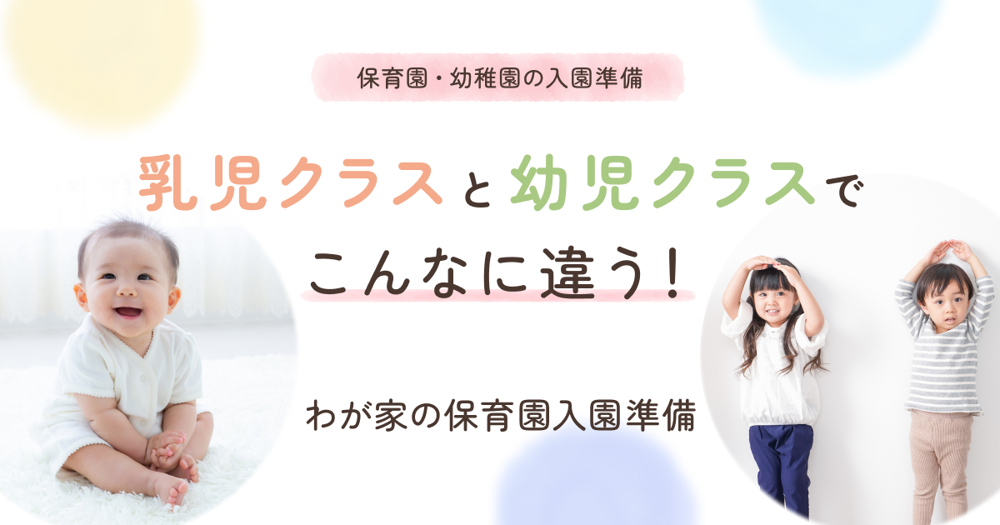

WORK

保育園・幼稚園 入園準備ブログ アイキャッチ
DESIGN
子育てブログの記事アイキャッチを制作しました。
- 目的
- 記事のテーマである「乳児クラスと幼児クラスで異なる入園準備」がひと目で伝わり、子育て中の読者が記事を読みたくなるアイキャッチを制作する。
- ターゲット
- 保育園・幼稚園への入園を控え、持ち物や準備について情報収集している子育て世代。
- 工夫した点
- スマートフォンでの閲覧を考慮し、メインタイトルの視認性と情報の優先順位を意識して制作しました。
また、「乳児クラス」と「幼児クラス」の違いが直感的に伝わるようにレイアウトし、やさしい配色とイラストを使用して記事の雰囲気に合わせています。
クライアントからのフィードバックをもとに、文字サイズや文字間、配置などを調整し、最終デザインへ仕上げました。 - 制作期間
- 3日間
- 使用言語・ツール
- Figma